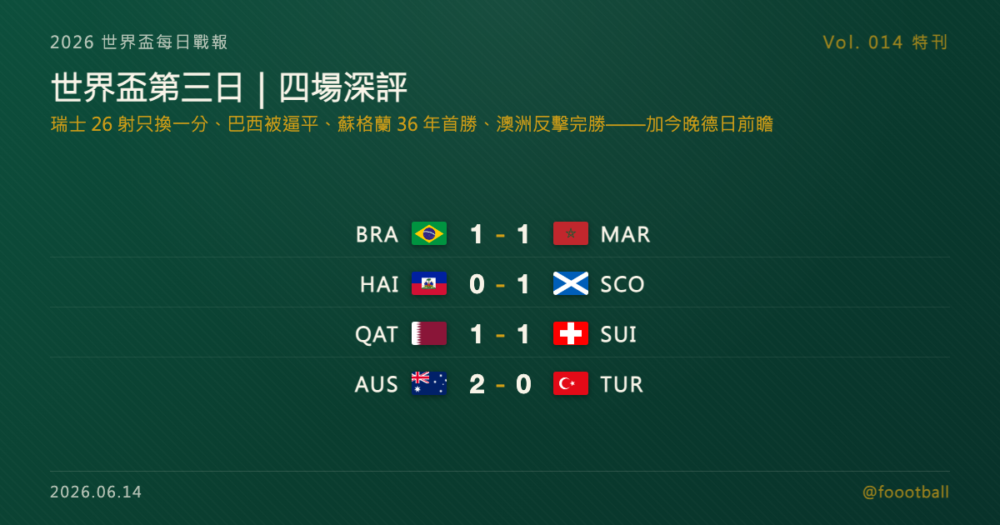

世界盃第三日深評：四場各有故事，今晚德國、日本帶著未竟登場
世界盃第三日的四場比賽比分平平、內容卻各有看頭：瑞士狂轟 26 射卻被卡達在補時製造的烏龍逼平、巴西與摩洛哥踢出勢均力敵的一夜、蘇格蘭靠一次把握拿下 36 年首勝登頂死亡之組、澳洲用反擊效率 2-0 完勝土耳其。而台北時間今晚到明晨，2022 年那場日本 2-1 德國裡互為對手的兩隊將再登場——德國求翻身、日本叩 8 強天花板。

2026 世界盃特刊｜Vol. 014 番外
世界盃進入第三日，台北時間從凌晨到下午，B、C、D 三個小組接力打完首輪。表面上是兩場 1-1、一場 1-0、一場 2-0，比分平平；但把每場拆開來看，這四場各有各的戲——有壓著打卻只換來一分的、有先盛後衰的勢均力敵、有靠一次把握扛起 36 年的，也有把「效率」演到極致的。先把今天這四場好好說一遍，再看今晚到明晨、兩支帶著歷史登場的球隊：德國與日本。
今日 4 場，各有值得說的
🇶🇦 卡達 1-1 🇨🇭 瑞士：瑞士 26 射只換一分，與一記殘酷的烏龍
瑞士這場踢得像一支「什麼都對、就差臨門一腳」的球隊。全場高達 26 次射門、長時間把卡達壓在自家半場，控球與節奏幾乎全面占優，卻始終缺一記真正致命的處理——第 17 分鐘 Embolo 的點球，是他們漫長壓制裡唯一的回報。比賽的殘酷在最後一刻才顯影：補時第 94 分鐘，Homam Ahmed 的傳中在後點製造混亂，卡達隊長 Khoukhi 與瑞士後衛 Miro Muheim 高高躍起爭頂，皮球經 Muheim 觸碰入網——FIFA 官方記為 Muheim 烏龍。對狂攻一整場的瑞士，這是足球最冷酷的一面；而對卡達，這一分是隊史在世界盃拿到的第一分：2022 年他們以地主身分三戰全敗、顏面盡失，這回終於用近乎完整的 90 分鐘死守換回了尊嚴。真正該擔心的是瑞士——26 射只換 1 球的把握度，撐不起一支想走遠的球隊。
🇧🇷 巴西 1-1 🇲🇦 摩洛哥：一場被低估的勢均力敵，與 Alisson 的關鍵兩撲
如果只看「五星巴西被逼平」，會錯過這場真正的精彩。這其實是一場摩洛哥真能把巴西拉進混戰的對決：全場射門數摩洛哥還以 14 比 12 略多。更能說明問題的是開局——摩洛哥在前 30 分鐘就轟出多達 12 次射門，把巴西的中場與防線反覆拉開，並由全場積極壓迫的 Saibari 在第 21 分鐘領銜先進球。巴西一度被打得手忙腳亂，直到第 32 分鐘才由 Vinícius Júnior 與 Bruno Guimarães 連線、右腳抽射越過門將 Bounou 扳平——這是他的第 10 個國家隊進球，而此前他進球的 8 場巴西全勝，這回首度被逼平。終場前摩洛哥的反撲，還得靠門將 Alisson 一記關鍵兩連撲才守下這一分。對安切洛蒂的巴西，這一分是警訊也是提醒：摩洛哥的強度貨真價實，而這支巴西的節奏，還沒真正熱起來。
🇭🇹 海地 0-1 🏴 蘇格蘭：一次把握，扛起 36 年的重量
這是四場裡最「樸素」的一場，卻是份量最重的一場。蘇格蘭沒有華麗的壓制，而是務實地守住結構、等一個機會——第 28 分鐘，Che Adams 的射門被海地門將 Placide 擋出，跟進的中場核心 McGinn 補射破門，這也是全場唯一進球。此後海地不是沒有機會，但蘇格蘭咬牙守到了最後（Reuters 直接用「hang on」形容）。這一勝的重量遠超過三分：這是蘇格蘭自 1990 年以來、睽違 36 年的首場世界盃勝利，也讓他們在有巴西、摩洛哥的 C 組裡，首輪結束時意外獨居龍頭。一支從未在世界盃晉級過淘汰賽的球隊，用最不起眼的方式，把歷史推到了可被改寫的位置——這也正是 48 隊新賽制最直接改變的地方：一場首勝，足以重新定義小隊的出線想像。
🇦🇺 澳洲 2-0 🇹🇷 土耳其：把「效率」演到極致的一堂課
這場是戰術上的反差教材。土耳其手握 Çalhanoğlu 等好手、長時間掌握球權與射門量，看起來像進攻方；但真正掌握比賽走向的是澳洲——他們用紀律的低位防守把土耳其擋在禁區外，再用快速反擊一刀致命。第 27 分鐘，年僅 20 歲的 Nestory Irankunda 在反擊中破門先馳得點（據澳洲媒體報導，為澳洲世界盃史上最年輕進球者），第 75 分鐘 Connor Metcalfe 再下一城，2-0 收下一場「控球輸、比賽贏」的勝利。對首戰回到世界盃舞台的土耳其，這是一記教訓：球權與射門量若換不成進球，再多也只是數字。而澳洲用一場乾淨的反擊秀，與美國攜手領跑 D 組。
今晚明晨：從多哈那場 2-1 說起
把時間倒回 2022 年 11 月 23 日，多哈的 Khalifa International Stadium。
那場比賽的劇本，前 70 分鐘是按德國寫好的版本走的。第 33 分鐘 İlkay Gündoğan 主罰點球命中，四屆世界盃冠軍取得領先，控球、機會都牢牢握在手上。然後比賽在最後 15 分鐘翻了過來：第 75 分鐘，替補上場的 Ritsu Dōan（堂安律）在禁區混戰中抽射破門；第 83 分鐘，另一名替補 Takuma Asano（淺野拓磨）在右路單刀，用一記角度刁鑽的近角射門絕殺。日本 2-1，掀翻德國。
那一夜是兩個故事的交會點。對德國，它是一支昔日霸主跌進谷底的縮影——這場開門黑之後，德國最終在小組賽止步，連續兩屆世界盃倒在分組賽，對一個四度捧盃的足球大國而言，是難以想像的難堪。對日本，它是一段傳奇的序章——擊敗德國之後，他們又在同組扳倒西班牙，最終以小組第一的姿態，從那個被稱為「死亡之組」的組合裡昂首出線。
那場 2-1，後來成了卡達世界盃最具代表性的畫面之一。它不只是一場爆冷，更像一個時代的隱喻：當足球的版圖不再只屬於傳統豪門，亞洲球隊已經有能力在最大的舞台上，把四屆冠軍從領先的位置上拉下來。而日本沒有就此停步——同組對西班牙，他們又一次在落後的情況下 2-1 翻盤，硬是從德國與西班牙兩座大山中間擠出一條生路，以小組第一晉級。那是日本足球迄今最揚眉吐氣的一屆，也把外界對「亞洲足球天花板」的想像，往上頂了一截。
三年半後，德國與日本又都回到了世界盃。只是這一次，他們不在同一組、不是對手，而是在台北時間 6/15 凌晨先後登場，各自要回答同一個問題：能不能比上次走得更遠？
德國線：四屆冠軍的翻身之戰
先說德國。理解這支德國今晚帶著什麼心情登場，得先記住一個數字：連續兩屆。2018 年俄羅斯世界盃，衛冕冠軍德國爆冷在小組賽出局；2022 年卡達世界盃，他們又一次倒在分組賽——而那一屆的開門黑，正是輸給日本的那場 2-1。對一支拿過四次世界盃、長年是「大賽穩定」代名詞的球隊來說，這樣的連續兩屆小組出局，是隊史上少見的低谷。
2018 年的那次尤其刺眼。身為衛冕冠軍，德國被分在有墨西哥、瑞典、南韓的小組，卻先以 0-1 不敵墨西哥，最後一輪又在補時連失兩球、0-2 輸給南韓，小組墊底、提前打包——那是德國隊自 1938 年以來最早的一次世界盃出局，也讓他們成了足壇所謂「衛冕冠軍魔咒」最新的受害者。2022 年的劇本不同、結局卻相似：開門輸日本，最終再一次倒在分組賽。兩屆加起來，德國送給球迷的是同一種難以下嚥的失望，也讓「德國在大賽很穩」這句長年的信仰，第一次出現了裂痕。
於是 2026 這一屆，對德國的意義很單純：不能再有第三次。
帶隊的是少帥 Julian Nagelsmann。他手上握著兩名被視為當今足壇最頂尖的年輕創造者——Jamal Musiala（賈馬爾·穆夏拉）與 Florian Wirtz（弗洛里安·維爾茨），兩人都還不到當打之年的頂點，卻已是德國進攻的命脈；中場由隊長 Joshua Kimmich（約書亞·基米希）坐鎮。而最有故事性的一筆，是 40 歲的門將 Manuel Neuer（曼努埃爾·諾伊爾）——這位德國門神取消了退役的決定，回歸披上國家隊戰袍，準備出戰自己的第五屆、也幾乎篤定是最後一屆世界盃。一支「最頂尖的年輕創造力」配上「最後一舞的老門神」的德國，本身就充滿張力。
Nagelsmann 要解的題，其實不只是贏球，而是「重新定義這支德國是誰」。過去兩屆出局，外界談得最多的，是德國在 2014 年捧盃的黃金世代老去之後，遲遲沒能長出一套清晰的球隊性格——控球漂亮卻欠缺殺傷力、中前場人才濟濟卻拼不成一個整體。如今 Musiala 與 Wirtz 的並肩，被視為德國重建的最大希望：兩名都能持球、能突破、能創造的年輕核心，若能在同一套體系裡共存，德國的進攻就有機會從「好看」變回「致命」。這支德國的天花板有多高，很大程度取決於這兩人的化學反應。
賽程上，德國這次被分在 E 組，同組是古拉索、象牙海岸與厄瓜多，紙面上是一個可以掌控的籤運。台北時間 6/15 凌晨，德國在休士頓對上首次闖進世界盃的加勒比小國古拉索，揭開自己的開幕秀。別小看這支世界盃史上人口最少的參賽國之一——他們由 78 歲、執教過 1994 荷蘭與 2006 南韓的荷蘭名帥 Dick Advocaat 帶領（將成為世界盃史上最年長主帥），陣中多是荷蘭體系培養的球員，賽前還放話要從德國身上「偷走幾分」。以實力論，德國理應拿下開門紅；但正因為他們已經連續兩屆在不被看衰的情況下翻車，這一場「該贏的比賽」反而成了最需要證明的開場——證明這支德國，已經把過去兩屆的陰影甩在身後。
日本線：叩關 8 強的天花板
再說日本。如果德國的關鍵字是「翻身」，日本的關鍵字就是「天花板」。
日本是世界盃的常客，自 1998 年首度參賽以來幾乎屆屆都在。他們四度闖進 16 強（2002、2010、2018、2022），實力與穩定度早已是亞洲頂尖；但這四次，日本都在 16 強止步——從未踢進過 8 強。那道 16 強的牆，成了日本足球長年想推卻推不開的天花板。
而 2022 卡達，是他們離突破最近的一次，也是最讓人不甘的一次。先後擊敗德國與西班牙、登頂死亡之組之後，日本在 16 強對上克羅埃西亞，90 分鐘 1-1 後進入延長與 PK 大戰，最終在十二碼飲恨出局。打進 8 強的門，又一次在最後一步被關上。
而 16 強這道牆，日本不是第一次撞上，每一次的方式還都不一樣。2002 年本土世界盃，他們在 16 強 0-1 不敵土耳其；2010 年南非，與巴拉圭 0-0 後 PK 飲恨；2018 年俄羅斯，更上演了世界盃史上最揪心的一幕之一——對比利時一度 2-0 領先，卻在終場前被對手連扳三球、補時遭絕殺，2-3 倒下。再加上 2022 年對克羅埃西亞的 PK 出局，日本四度闖進 16 強、四度在這一輪止步，每一次都離 8 強只差一步、每一次都用不同的方式心碎。那道門，幾乎成了日本足球的一種集體記憶。
也正因如此，這支日本和二十年前那支「靠紀律與整體拼一場是一場」的亞洲代表，已經不太一樣了。如今的主力，多半在歐洲頂級聯賽踢著主力位置——他們不再只是「闖進來的亞洲隊」，而是帶著與歐洲強權平視的底氣登場。能不能把這份底氣，第一次轉換成一張 8 強門票，正是 2026 對日本的真正考題。
2026 由 Hajime Moriyasu（森保一）續任，帶著一批旅外核心再次叩關：Takefusa Kubo（久保建英）、後防的 Takehiro Tomiyasu（富安健洋）、新任隊長 Ko Itakura（板倉滉），以及將出戰個人第五屆世界盃的老將 Yuto Nagatomo（長友佑都）。但出發前，日本接連吞下兩記重擊：先是最具創造力的邊路王牌 Kaoru Mitoma（三笘薰）因傷落選；緊接著在開賽前，原隊長、效力利物浦的中場 Wataru Endo（遠藤航）也因左腳傷勢退出名單、並宣布退出國家隊，隊長袖標改由後衛板倉滉接下。對一支講求邊路突破與中場覆蓋的球隊，一口氣失去邊路爆點與中場大腦，是不小的折損。少了 Mitoma 的突破與 Endo 的中場穩定，日本勢必更倚賴 Kubo 的持球創造與板倉滉的後場領導，並用整體的流動與更多人的跑動，去補上這兩個核心留下的空缺。
日本的籤也不輕鬆。F 組同組有荷蘭、瑞典與突尼西亞，而首戰就直接對上荷蘭——台北時間 6/15 凌晨，日本在德州 Arlington 迎戰歐洲勁旅。這是一場硬仗開局，卻也是一面再好不過的鏡子：如果這支少了 Mitoma 的日本，真的想在 2026 推開那道 16 強的牆，那麼從荷蘭身上拿到什麼，會是最早的線索。
荷蘭是世界盃舞台上的常勝客、曾三度打進決賽的勁旅，論整體實力與大賽經驗都在日本之上。但越級挑戰，本來就是日本這支球隊最熟悉的劇本——三年半前在多哈，他們正是靠一場又一場的「不被看好」，把德國與西班牙先後拉下馬。從這個角度看，開幕就碰荷蘭未必是壞籤：贏了，是宣示；逼平，是底氣；就算落敗，後面也還有兩輪可以調整。真正值得看的，是這支日本能不能從第一場硬仗裡，就讓人相信「這次或許真的不一樣」。
兩種未竟，同一個夜晚
德國的未竟，是「不該止步小組賽」；日本的未竟，是「不甘止步 16 強」。一個要證明自己仍是那個能走到最後的德國，一個要證明自己終於能跨過那道牆。
有意思的是，把這兩種未竟第一次擺在同一個畫面裡的，正是 2022 那場 2-1——德國的下墜與日本的躍升，在多哈的那 90 分鐘裡交會了一次。如今 2026 北美，他們在不同的組、不同的城市，卻在台北時間同一個凌晨先後走上球場：德國對古拉索，日本對荷蘭。
而這一屆，又是一個特別的時間點。2026 是世界盃首度擴軍到 48 隊的一屆，小組數增加、晉級名額更多、容錯空間也更大。對德國這樣的傳統強權，理論上出線的難度下降了——但這反而讓「再一次失手」變得更不可被原諒；對日本這樣卡在 16 強的球隊，48 隊新制給的其實不是更短的路，而是更早的容錯——小組出線的機會變多了，但想真正抵達 8 強，反而得比過去多跨一輪淘汰賽。換句話說，新賽制給了兩隊各自不同的提醒：德國沒有再失手的藉口，日本則要在淘汰賽連續贏球，才能摸到那道從未跨過的門。
開幕戰往往說明不了太多，一場勝負也決定不了一屆的高度。但對這兩支都帶著「上次差一點」記憶的球隊，今晚到明晨的這兩場，至少會先回答一個最樸素的問題——這一次，他們準備好往前再走一步了嗎？
無論結果如何，這都會是值得守在螢幕前的一個凌晨：一支想證明自己還沒老去的霸主，一支想證明自己能再更上一層的挑戰者，在同一個夜裡、不同的球場，各自啟程。答案，從凌晨的哨聲開始。
資料來源：FIFA 與各賽事官方資料、ESPN、Opta Analyst、Reuters、The Guardian、SBS、The Japan Times、Bundesliga 官網等報導交叉核對（6/13 四場賽果/數據、2022 世界盃日德之戰與兩隊歷屆戰績、2026 陣容/分組/賽程、球員傷停資料）。賽程時間以台北時間換算、實際以官方公告為準。
常見問題
2026 世界盃 6/13（美加墨當地）四場結果如何？
卡達 1-1 瑞士（卡達補時靠 Muheim 烏龍逼平、拿下隊史世界盃第一分）、巴西 1-1 摩洛哥（Saibari 先進、Vinícius 扳平）、海地 0-1 蘇格蘭（McGinn 第 28 分鐘進球、蘇格蘭 36 年首勝登 C 組龍頭）、澳洲 2-0 土耳其（Irankunda、Metcalfe 進球）。
2022 年世界盃日本對德國的比分是多少？
日本 2-1 逆轉德國（2022/11/23，卡達世界盃 E 組）。德國上半場由 Gündoğan 點球領先，日本下半場靠替補 Dōan（堂安律，75'）與 Asano（淺野拓磨，83'）連進兩球逆轉。那一屆德國小組賽出局，日本則先後擊敗德國與西班牙以小組第一晉級。
德國與日本 2026 世界盃首戰何時、對誰？
台北時間 6/15 凌晨先後登場：德國在 E 組對古拉索（休士頓），日本在 F 組對荷蘭（德州 Arlington）。日本四度闖進 16 強卻從未進過 8 強；德國則連兩屆（2018、2022）小組出局，都想證明能比上次走得更遠。
Tags：世界盃, 2026世界盃, 德國隊, 日本隊, 世界盃特刊